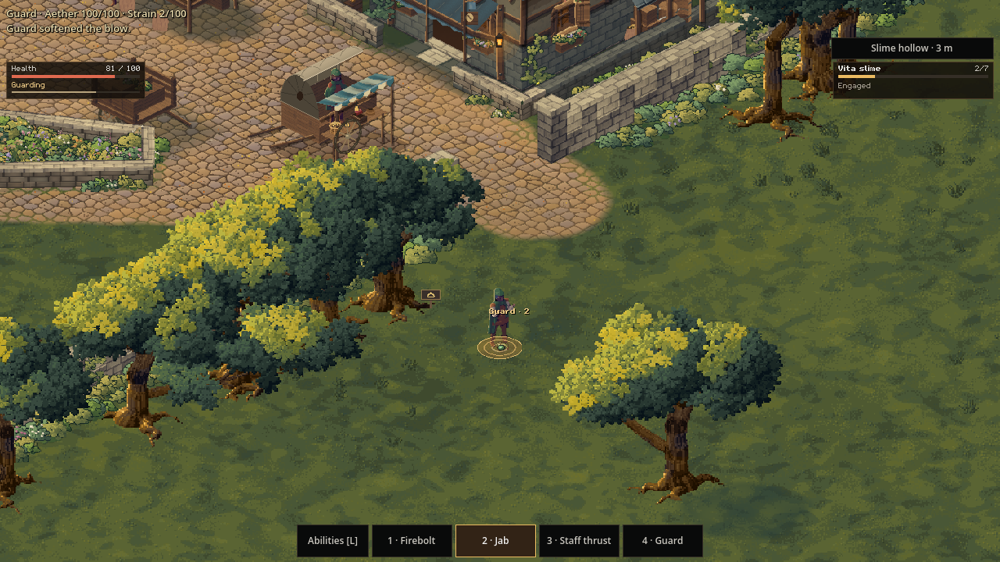
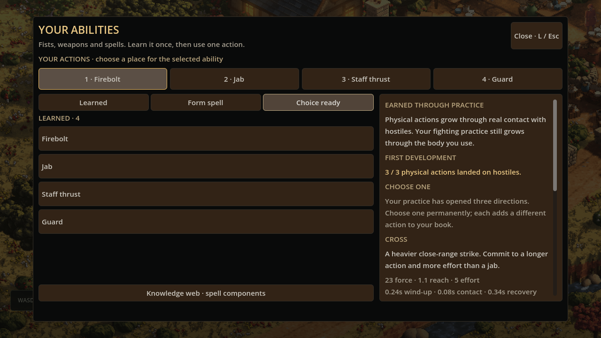

Day 32: fists, staves and spells
Physical fighting and spellcasting now share four familiar actions. A reachable slime hollow gives them a first encounter, and landed physical attacks can earn a permanent choice of how to develop your fighting style. This work is being prepared for review.
23 October 2026

An ability should become something you know how to do. You learn it, give it a place among your actions, and call on it when the moment comes. The interesting decisions belong in choosing what to become and how to use it.
That is the direction of this update. A jab, a staff thrust and a firebolt now belong to the same fighting system, with room for the player to develop a preference through practice.
Four actions, one way to use them
Press 1–4, or tap an action on the bar, to use a learned ability. The starting book brings together Firebolt, Jab, Staff thrust and Guard. Existing characters keep their saved assignments, with physical foundations added to free spaces.
A jab comes from your own body and needs no elemental attunement. Staff thrust uses the staff you are carrying. Each physical action has its own reach, effort and rhythm: preparing the movement, making contact and recovering before the next action.
Facing and distance matter. A punch must reach the foe in front of you; the staff offers a longer, narrower thrust. Spell shapes also have their own contact areas, so a travelling bolt and a forward fan ask for different positioning. Walls and differences in height belong to that encounter too.
Guard gives you another response to an approaching blow. Catch it early for a parry, or brace to soften the impact. Tab turns you toward the nearest visible slime, while movement lets you change your position and aim.
Follow the lane to the hollow
The town now has a small wild encounter you can reach through ordinary play. The Slime hollow guide leads along a walkable route to a warning sign. From there, enter the clearing when you are ready.
The slimes answer back. An amber warning marks an incoming hop, giving you time to move or prepare a guard. Striking a slime can split it into smaller pieces, so a landed blow may change the shape of the fight rather than finish it.
You can leave the hollow to retreat and recover. Falling brings you back to its approach, bruised and strained, with time to rest before another attempt.
Practice opens a direction
Land three physical actions on hostiles and your book offers a first development. A swing that misses and a guard do not advance this milestone. An action that catches several foes still counts once.

Choose Cross for a heavier punch that takes more effort and a longer recovery. Choose Palm for a shorter strike that gives up damage for stronger interruption. Choose Kick for greater reach and force, with more effort and recovery than a jab.
This is one permanent choice, saved with your character. It adds a usable action to the same book as your other abilities. Ordinary fighting practice continues to grow through the body you use; this milestone records a direction you have earned.
Shape an ability in a quiet moment
Retreat from the fight, then press L to open your abilities. Here you can review what you know, assign actions and make your earned development choice.
Spell formation also lives here. Component knowledge opens whole expressions you can form, name and keep. Choose the shape during that quiet moment, then use the resulting spell with one action in the field. The knowledge web remains the place to explore further components and techniques.
This first fighting loop is deliberately small: bodily foundations, one staff action, working spell shapes and a slime encounter. It gives the choices a place to matter, from the distance of your first jab to the development you carry into your next fight.